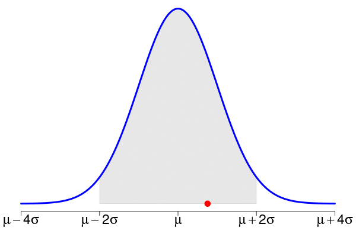
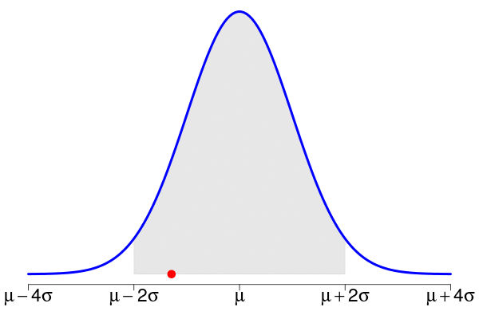
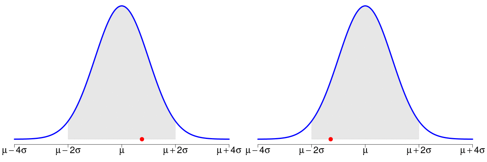
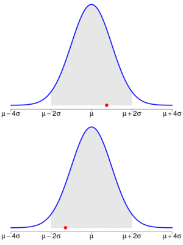
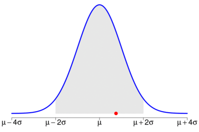

-
Some tools for animated gifs
06/11/2015
Source(latest update : 2015-11-06 15:01:11)
It took me some time to find how to merge two animated gifs (using freeware only, as usual). So it is worth sharing my notes. Below are the two animated gifs used for my example.
 Append one gif to the other
Below these are the same animations but they are merged into only one single animated gif, by appending the second one at the right to the first one.

The ImageMagick command I used to create it (found on imagemagick.org) is the following one:
convert file1.gif'[0]' -coalesce \\( file2.gif'[0]' -coalesce \\) \\ +append -channel A -evaluate set 0 +channel \\ file1.gif -coalesce -delete 0 \\ null: \\( file2.gif -coalesce \\) \\ -gravity East -layers Composite output.gifTo append vertically, run:
convert file1.gif'[0]' -coalesce \\( file2.gif'[0]' -coalesce \\) \\ -append -channel A -evaluate set 0 +channel \\ file1.gif -coalesce -delete 0 \\ null: \\( file2.gif -coalesce \\) \\ -gravity South -layers Composite output.gifand you will get this single animation:
Join one gif after the other one
One can also join the two animations, the second one after the other one, including a delay between them (4 seconds in the example below):
convert file1.gif -coalesce \ \( +clone -set delay 4/1 \) +swap +delete \ \( file2.gif -coalesce \) \ \( +clone -set delay 4/1 \) +swap +delete \ -resize 400x300 -layers optimize output.gifCompress a gif
Finally I discovered gifsicle while I was searching a way to compress an animated gif. It achieves an amazing performance, by simply running this line:
gifsicle -O3 --colors 256 < infile.gif > outfile.gifTo know more about gifsicle (which not only serves to compress), take also a look at this post on graphicdesign.stackexchange.
R functions
Obviously, the previous command lines are not user-friendly. I wrote some R functions to run them more conveniently (at least, for R users). Moreover, since I usually use the animation package to create my animations, these functions provide additional tools. Here are two examples of my functions, they should be enough to understand how to use them:
gif_append("file1.gif", "file2.gif", "outfile.gif", horizontal=FALSE, extra.opts="-resize 300x400") gif_append("file1.gif", "file2.gif", "outfile.gif", delay=4) gif_compress("file.gif", "outfile.gif", extra.opts="--colors 256"))And their code is given below:
gif_append <- function(gif1, gif2, outgif, horizontal=TRUE, show=TRUE, extra.opts=""){ command <- ifelse(horizontal, sprintf("convert %s'[0]' -coalesce \\( %s'[0]' -coalesce \\) \\ +append -channel A -evaluate set 0 +channel \\ %s -coalesce -delete 0 \\ null: \\( %s -coalesce \\) \\ %s -gravity East -layers Composite %s", gif1, gif2, gif1, gif2, extra.opts, outgif), sprintf("convert %s'[0]' -coalesce \\( %s'[0]' -coalesce \\) \\ -append -channel A -evaluate set 0 +channel \\ %s -coalesce -delete 0 \\ null: \\( %s -coalesce \\) \\ %s -gravity South -layers Composite %s", gif1, gif2, gif1, gif2, extra.opts, outgif)) system.fun <- if (.Platform$OS.type == "windows") shell else system if(show) message("Executing: ", strwrap(command, exdent = 2, prefix = "\n")) system.fun(ifelse(.Platform$OS.type == "windows", sprintf("\"%s\"", shQuote(command)), command)) }gif_join <- function(gif1, gif2, outgif, delay=3, show=TRUE, extra.opts=""){ command <- sprintf("convert %s -coalesce \\ \\( +clone -set delay %s/1 \\) +swap +delete \\ \\( %s -coalesce \\) \\ \\( +clone -set delay %s/1 \\) +swap +delete \\ %s -layers optimize %s", gif1, delay, gif2, delay, extra.opts, outgif) system.fun <- if (.Platform$OS.type == "windows") shell else system if(show) message("Executing: ", strwrap(command, exdent = 2, prefix = "\n")) system.fun(ifelse(.Platform$OS.type == "windows", sprintf("\"%s\"", shQuote(command)), command)) }gif_compress <- function(ingif, outgif, show=TRUE, extra.opts=""){ command <- sprintf("gifsicle -O3 %s < %s > %s", extra.opts, ingif, outgif) system.fun <- if (.Platform$OS.type == "windows") shell else system if(show) message("Executing: ", strwrap(command, exdent = 2, prefix = "\n")) system.fun(ifelse(.Platform$OS.type == "windows", sprintf("\"%s\"", shQuote(command)), command)) }
- Home
- About
- PoirotReproducible Blogging with R Markdown
- SlidifyReproducible html5 slides from R markdown
- R-bloggersBlog posts about R, contributed by R bloggers worldwide.
- stla.overblogMy previous blog
- Timely Portfolio A great blog about R, Javascript, and more